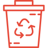
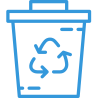
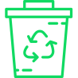

O que é reciclagem
A reciclagem é o processo de reaproveitamento do lixo descartado,
dando origem a um novo produto ou a uma nova matéria-prima com o
objetivo de diminuir a produção de rejeitos e o seu acúmulo na
natureza, reduzindo o impacto ambiental. Pratica-se, então, um
conjunto de técnicas e procedimentos que vão desde a separação do lixo
por material até a sua transformação final em outro produto.
Apesar de não ser a única medida a ser realizada para a diminuição do
lixo produzido pela sociedade, a reciclagem possui um importante
papel, uma vez que, além de reduzir a quantidade de rejeitos, também
diminui a procura por novas matérias-primas. Dessa forma, quanto mais
se recicla, mais se reaproveita e, consequentemente, menor é a
necessidade de extrair novos materiais da natureza.
Soma-se aos benefícios da redução do lixo e desoneração dos recursos
naturais o fato de o processo de reciclagem ajudar a movimentar a
economia, pois empresas especializadas nesse processo passam a atuar,
gerando, inclusive, mais emprego e renda. Um exemplo também é a
formação de cooperativas de reciclagem, como a dos catadores de papel,
que, embora trabalhem quase sempre em regime informal de trabalho,
conseguem adquirir uma renda para sustentar suas famílias.
O primeiro passo para a realização do processo de reciclagem é a coleta seletiva, ou seja, a separação do lixo por material, com o seu posterior destino para o reaproveitamento. Geralmente, divide-se primeiramente o material reciclável do não reciclável e, em seguida, separa-se o que é reciclável em metais, plástico, papel, vidro e orgânico
-

Lixo vermelho que é responsavel pela sinalização da Reciclagem de plástico, para saber mais sobre ele clique no link: Veja mais
-

Lixo azul que é responsavel pela sinalização da Reciclagem de papel, para saber mais sobre ele clique no link: Veja mais
-
Lixo amarelo que é responsavel pela sinalização da Reciclagem de metal, para saber mais sobre ele clique no link: Veja mais
-

Lixo verde que é responsavel pela sinalização da Reciclagem de vidro, para saber mais sobre ele clique no link: Veja mais
-
Lixo preto que é responsavel pela sinalização do lixo não reciclavel, para saber mais sobre ele clique no link: Veja mais
-
-marrom.png)
Lixo marrom que é responsavel pela sinalização da Reciclagem de lixo orgânico, para saber mais sobre ele clique no link: Veja mais